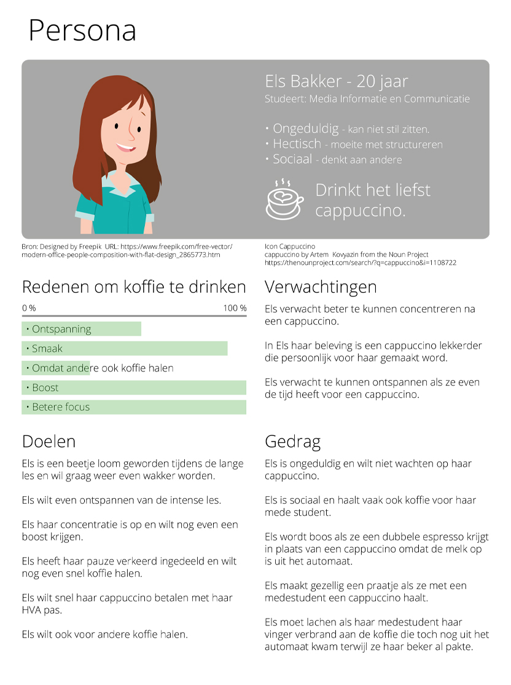

In het eerste blok werd ik gelijk hard aan het werk gezet met het vak User Centred Design (UCD). Overal op de HvA staan koffie automaten van Maas. Onze opdracht was door specifieke methodes te gebruiken die we gaan leren tijdens UCD om deze koffie automaten te verbeteren voor de gebruiker.
DHO resultaat: Wat heeft de gebruiker vast?
Een persona maken
In het vak UCD doen we onderzoeken als Interview analyse, Desk Researsch, Deep Haning Outs en User Trips. Vervolgens ben ik een affinity map gaan maken waar alle belangrijke punten gecategoriseerd worden. Aan de hand van al deze resultaten maak ik een persona. Deze persona representeert de doelgroep en hun wensen. Mijn persona krijgt de naam Els Bakker. Zij is een MIC student. Het uitgewerkte persona zie je hieronder.

Procesverslag
De hele opdracht is een stuk groter dan alleen een persona. Lijkt het je interessant om het hele proces te lezen? Download dan het procesverslag!